Visión
La visión es una de las principales formas de percepción en los animales, permitiéndoles detectar movimientos, colores, formas y patrones que les ayudan a sobrevivir en su entorno.
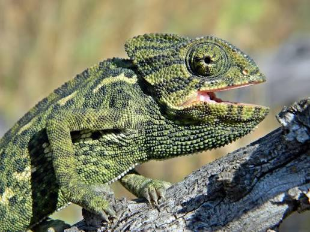
Camaleón común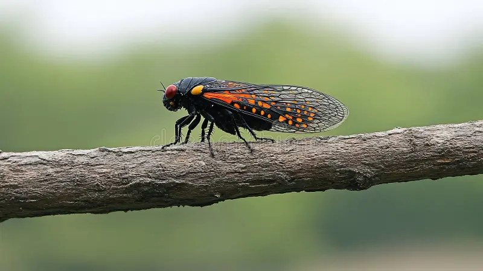
Cigarra negra y escarlataCigarras comunes
 Erizo común europeo
Erizo común europeo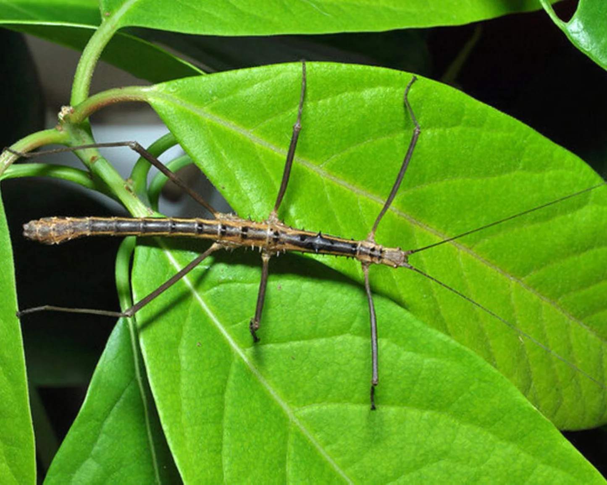
Insecto palo de Vietnam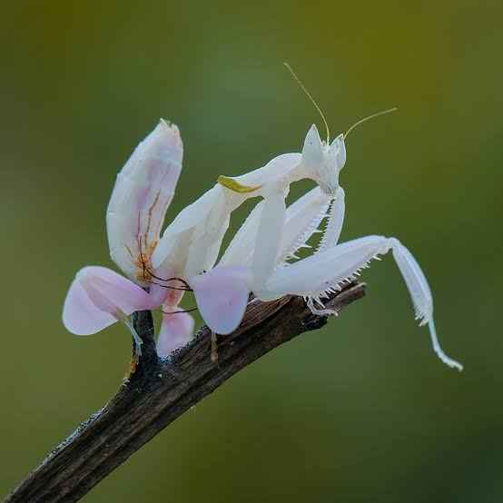
Mantis orquídea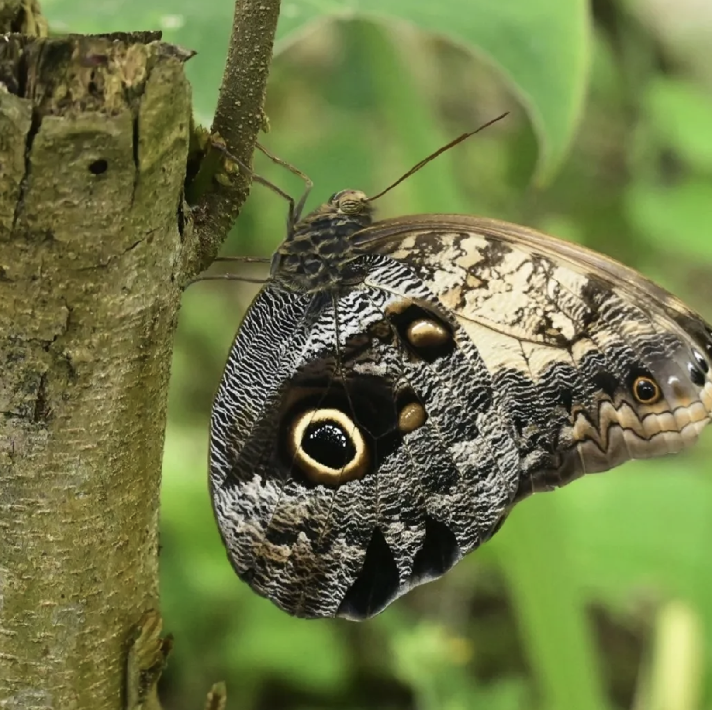
Mariposa Caligo común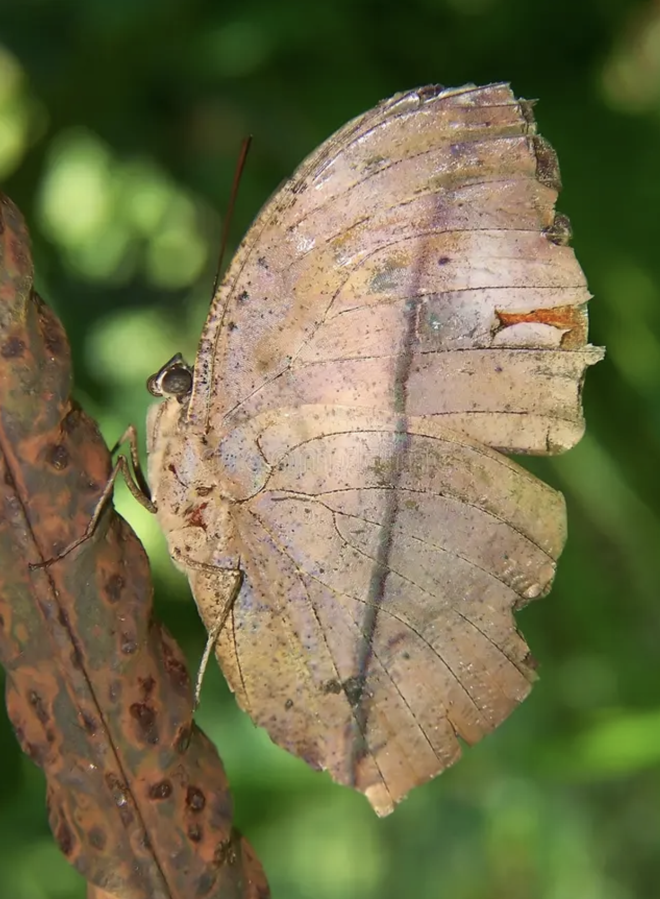
Mariposa hoja seca común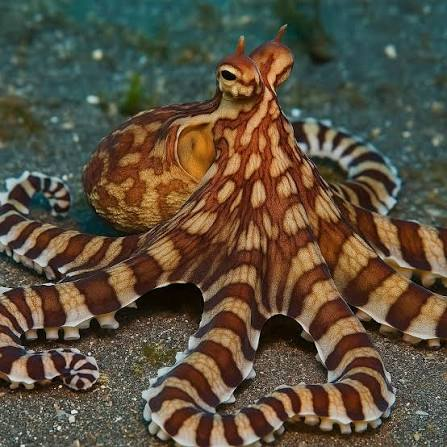
Pulpo mimo / imitador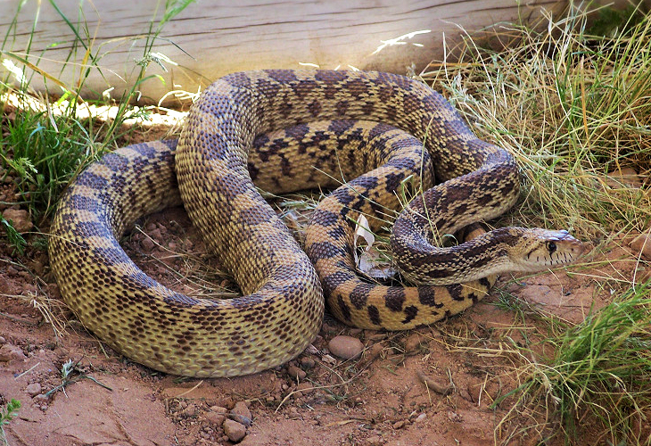
Serpiente toro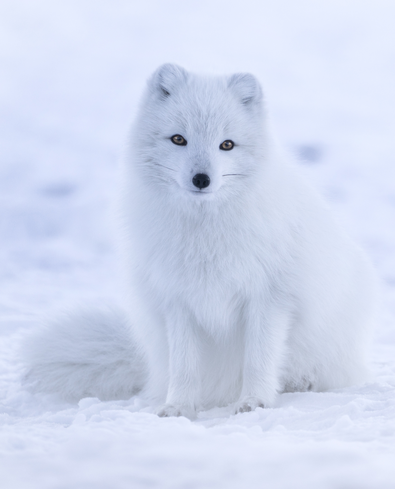
Zorro polar / ártico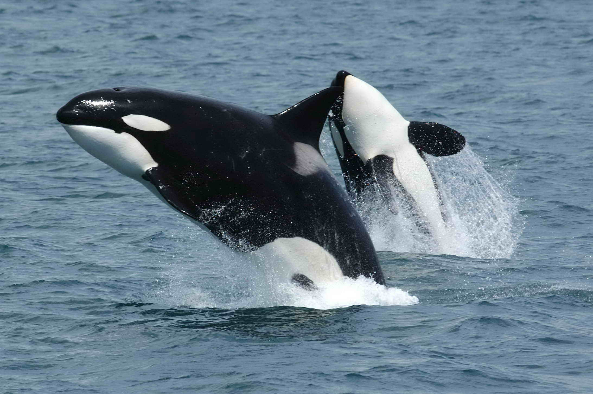
Orca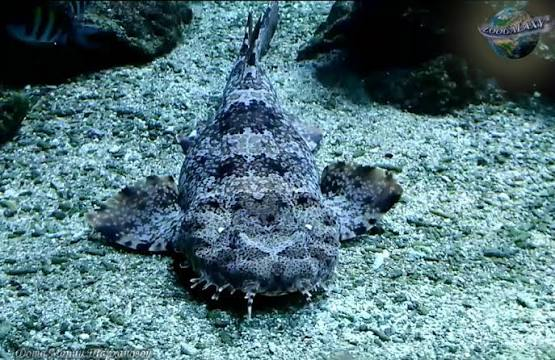
Tiburón alfombra manchado Venus atrapamoscas
Venus atrapamoscas Planta Jarra
Planta Jarra